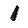
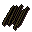
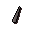
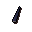
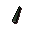
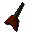

Feather
| Config name | feather |
| Item id | 314 |
| Value | 2 gp |
| Weight | 2g |
| Members | No |
| Tradeable | Yes |
| Stackable | Yes |
| Defined in | scripts/skill_fishing/configs/fishing.obj |
Feather
Used for fly fishing.
Used to make
| Skill | Level | XP | Ingredients | Tool | How | Where | Makes |
|---|---|---|---|---|---|---|---|
| Fishing | 20 | 50.0 | click the spot | fishing spot | |||
| Fishing | 20 | 50.0 | click it | fishing spot | |||
| Fishing | 30 | 70.0 | click the spot | fishing spot | |||
| Fishing | 30 | 70.0 | click it | fishing spot | |||
| Fletching | 1 | 1.8 |  Bronze dart tip ×10, | use on item | |||
| Fletching | 1 | 1.0 | use on item | members; up to 15 per action | |||
| Fletching | 5 | 1.5 |  Ogre arrow shaft ×6 | use on item | members; up to 6 per action; requires Big Chompy Bird Hunting (%chompybird) | ||
| Fletching | 22 | 3.8 | use on item | ||||
| Fletching | 37 | 7.5 |  Steel dart tip ×10, | use on item | |||
| Fletching | 52 | 11.2 |  Mithril dart tip ×10, | use on item | |||
| Fletching | 67 | 15.0 |  Adamant dart tip ×10, | use on item |  Adamant dart ×10 | ||
| Fletching | 81 | 18.8 | use on item |
Dropped by
| NPC | Level | Quantity | Rarity | Via | Notes |
|---|---|---|---|---|---|
| 1 | 15 | 1/4 (25%) | |||
| 1 | 5 | 1/4 (25%) | |||
| 1 | 15 | 1/4 (25%) | |||
| 1 | 5 | 1/4 (25%) | |||
| 2 | 15 | 1/4 (25%) | |||
| 2 | 5 | 1/4 (25%) | |||
| 14 | 20 | 1/32 (3.12%) | members | ||
| 14 | 40 | 1/32 (3.12%) | members | ||
| 14 | 20 | 1/32 (3.12%) | free-to-play only | ||
| 14 | 40 | 1/32 (3.12%) | free-to-play only | ||
| 29 | 20 | 1/32 (3.12%) | members | ||
| 29 | 40 | 1/32 (3.12%) | members | ||
| 29 | 20 | 1/32 (3.12%) | free-to-play only | ||
| 29 | 40 | 1/32 (3.12%) | free-to-play only | ||
| 49 | 20 | 1/32 (3.12%) | members | ||
| 49 | 40 | 1/32 (3.12%) | members | ||
| 49 | 20 | 1/32 (3.12%) | free-to-play only | ||
| 49 | 40 | 1/32 (3.12%) | free-to-play only | ||
| 79 | 20 | 1/32 (3.12%) | members | ||
| 79 | 40 | 1/32 (3.12%) | members | ||
| 79 | 20 | 1/32 (3.12%) | free-to-play only | ||
| 79 | 40 | 1/32 (3.12%) | free-to-play only | ||
| 120 | 20 | 1/32 (3.12%) | members | ||
| 120 | 40 | 1/32 (3.12%) | members | ||
| 120 | 20 | 1/32 (3.12%) | free-to-play only | ||
| 120 | 40 | 1/32 (3.12%) | free-to-play only | ||
| 159 | 20 | 1/32 (3.12%) | members | ||
| 159 | 40 | 1/32 (3.12%) | members | ||
| 159 | 20 | 1/32 (3.12%) | free-to-play only | ||
| 159 | 40 | 1/32 (3.12%) | free-to-play only |
Sold at
| Shop | Shopkeeper | Stock |
|---|---|---|
| Shantay Pass Shop | 500 | |
| Gerrant's Fishy Business. | 1000 | |
| Fernahai's Fishing Hut. | 800 | |
| Fishing Guild Shop. | 1500 |
Quests
Big Chompy Bird Hunting Desertrescue (quest) Holy Grail Ernest the Chicken Hero's Quest
Referenced in scripts
scripts/_test/scripts/cheats/cheat_bank.rs2scripts/_test/scripts/cheats/cheat_zone.rs2scripts/_test/scripts/debug/debug_fishing.rs2scripts/areas/area_camelot/scripts/king_arthur.rs2scripts/areas/area_mausoleum/scripts/monuments.rs2scripts/areas/areas_heroes_guild/scripts/achietties.rs2scripts/drop tables/scripts/chicken.rs2scripts/macro events/scripts/fishing/macro_event_river_troll.rs2scripts/macro events/scripts/general/macro_event_maze.rs2scripts/quests/quest_chompybird/scripts/chompy_bird.rs2scripts/quests/quest_chompybird/scripts/fycie.rs2scripts/quests/quest_desertrescue/scripts/al_shabim.rs2scripts/quests/quest_desertrescue/scripts/desertrescue_journal.rs2scripts/quests/quest_desertrescue/scripts/quest_desertrescue.rs2scripts/quests/quest_grail/scripts/grail_journal.rs2scripts/quests/quest_grail/scripts/quest_grail.rs2scripts/quests/quest_haunted/scripts/quest_haunted.rs2scripts/quests/quest_hero/scripts/hero_journal.rs2scripts/skill_fishing/scripts/fishing_spots/freshfish.rs2scripts/skill_fishing/scripts/fishing_spots/waterfall.rs2scripts/skill_fletching/scripts/arrows.rs2scripts/skill_fletching/scripts/darts.rs2scripts/skill_fletching/scripts/ogre_arrows.rs2